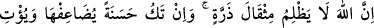
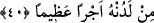

Cömert kişiler komşuluğa değer
Biriyle istişâre edeceksen eğer
Müşâvirin hakîm olmalıymış meğer.
Cömertlikte hem din, hem dünyâ hem de âhiret bereketi mevcuttur. Anlatıldığına göre
bir mecusî yüz dinar tasadduk etti. Bunu gören Şiblî: “Bu sadakanın sana faydası
olmaz.” dedi. Bunu duyan mecusî göğe bakarak ağladı. Birden üzerine yeşil bir yazıyla
şu beyitlerin yazılı olduğu bir kağıt düştü:
Ebedîlik yurdudur, hoşgörünün mükafatı
Eman bulmadır, o şiddetli günün korkusundan
Hiçbir ateş yakmaz çünkü cömert olanı
Bu cömert, olsa bile mecûsilerden.
Yani Allah Teâlâ cömert birini kafir ise îmân etmeye, mü’min ise tâatini artırmaya ve
onları ihlasla yapmaya muvaffak kılar. Böylece yüce derecelere yükselir ve en yüce
Rabbi’ni müşâhade etmeye lâyık hale gelir.
40- Şüphe yok ki Allah zerre kadar haksızlık etmez. (Kulun yaptığı iş, eğer bir
kötülük ise, onun cezâsını adaletle verir.) İyilik olursa onu katlar (kat kat artırır),
kendinden de büyük mükâfat verir.
“Şüphe yok ki Allah zerre kadar haksızlık etmez.” Zerre kadar eksiltmez, cezâyı da
artırmaz. Zerre, nerede ise görülemeyecek kadar küçük kırmızı bir karınca cinsidir.
Yâhut toprağın çok küçük parçalarıdır. Yahut da evde güneş ışığında görünen dağınık
toz zerrecikleridir ki mübâlağa mânâsına bu daha uygundur. Bu ifade, hiç haksızlık
olmadığını göstermektedir. Çünkü azı olmayınca çoğu hiç olmaz. Az, çoğa dâhildir.
“İyilik olursa onu” yâni bu zerre kadar olan nesne bir iyilik olursa onun sevâbını
“katlar.” Çünkü, bir namazın iki namaz kılınması gibi iyiliğin bizzat kendisinin
katlanması mâkul değildir. Bu iyiliği yapana, yaptığı amele karşılık vaad ettiği
mükâfâttan fazla olarak “kendinden de büyük mükâfat” bol ihsân “verir.” Bu mükâfâta
ecir adının verilmesi, ecre tâbi ve onun üzerine ziyâde olmasındandır.
“et-Teysîr”de şöyle denilmiştir: Allah, dünyâyı ve dünyâdakileri “az” olarak
adlandırırken bu ihsânı “büyük” olarak adlandırdığına göre Allah’ın “büyük” olarak
vasıflandırdığı şeyin ne kadar olduğunu kim bilebilir?
Rivâyet olunduğuna göre “Kıyâmet günü bir kul getirilir ve bir münâdî evvelkilerle
sonrakilerin gözleri önünde: “Bu, falancanın oğlu falancadır. Kimin bunda hakkı